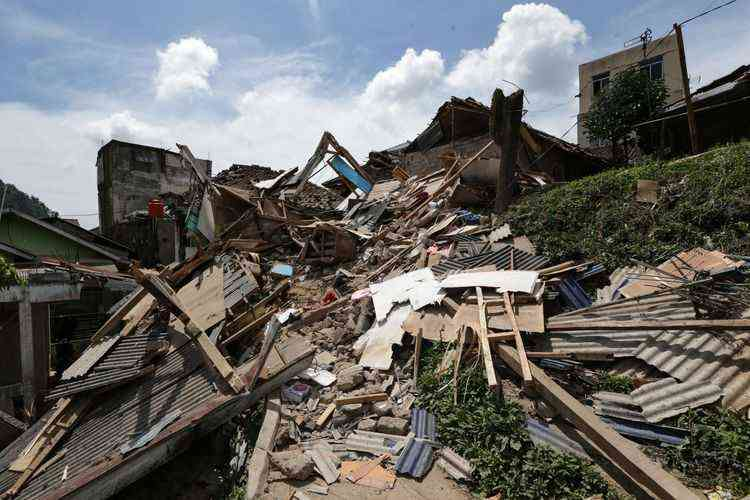

Bencana (Keseimbangan) Alam Cianjur

#PuisiSosial
Musibah tragedi kanjuruhan,
Belum lepas dari ingatan.
Penanganan masih berjalan,
Agar menjadi pengalaman.
Tetiba kita dihadapi musibah lagi,
Menyentak semua penghuni negeri.
Gempa bersusulan sebagai peringatan,
Banyak korban tertimpa reruntuhan.
Pusat gempa Cianjur di kaki pegunungan,
Menjadi sulit untuk memberi bantuan.
Lokasi kejadian susah tuk kirim alat,
Kiriman bantuan pun jadi terhambat.
Kelompok masyarakat pun bantu seketika,
Satuan petugas bencana pun siap siaga.
Korban ditemukan satu per satu,
Isak tangis keluarga pecah mengguruh.
Bencana alam selalu terjadi,
Tapi jarang kita antisipasi.
Walau larangan sudah disosialisasi,
Masyarakat kadang kurang perduli.
Kini tak perlu cari siapa yang salah,
Kejadian sudah terjadi begitu parah.
Saat ini hanya empati yang bisa diarah,
Tuk saling bantu ringankan yg terluka parah.
Siapa yang Menderita Diabetes Baca Segera sebelum Dihapus
Recommended by
Alam indonesia memang indah bestari,
Namun terkandung bahaya misteri.
Kita harus siap apapun yg terjadi,
Langkah antisipasi harus didahului.
Sebenarnya alam tak pernah murka,
Jika kita selalu menjaga bersama.
Ada batas pengamanan yang harus dijaga,
Keseimbangan alam harus dipelihara.
Bekasi, 22/11/22, @Cakbro.
#PrayForBencanaCianjur
Konten ini telah tayang di Kompasiana.com dengan judul "Bencana (Keseimbangan) Alam Cianjur", Klik untuk baca:
https://www.kompasiana.com/cakbrocakbro8056/6380ece74addee32cd2de4a2/bencana-keseimbangan-alam-cianjur
Kreator: Cak Bro Cak Bro